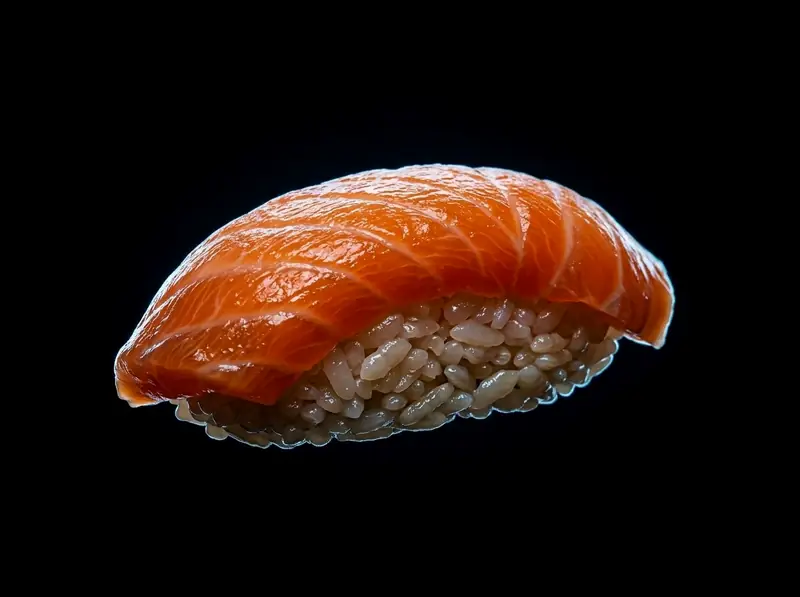
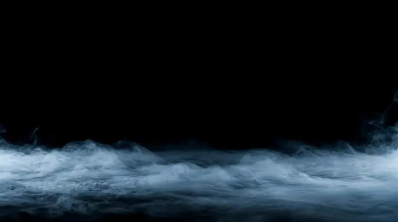

Asami Sushi São Bernardo
Act I
The Arrival
Act II
The Feast of Abundance Spatial Rodízio

Act III
The Sanctum The Room
São Bernardo do Campo Centro
Act IV

Act I
Act II

Act III
São Bernardo do Campo Centro
Act IV